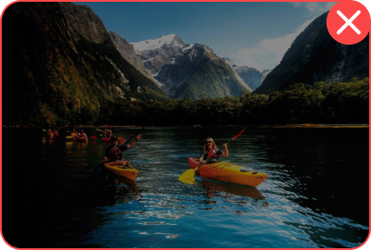

Изображения
Использование изображений, графики и видео может облегчить понимание контента для многих людей, особенно для людей с когнитивными нарушениями. Они также могут служить подсказками, которые используют люди с нарушениями зрения, чтобы ориентироваться в контенте.
Однако вам всегда следует предоставлять альтернативу мультимедийным материалам, чтобы люди, которые не могут воспринимать визуальную информацию, не пропустили тот же контент.
Принципы
Фотографии должны быть в соответствующем задаче цифровом разрешении.
Фотографии не должны быть плохого качества (смазанные, темные, засвеченные).
Фотографии не должны быть с брендами, официально незаявленными
как партнеры.
Фотографии не должны быть с искаженными углами съемки.
Формат изображения
Для веб-приложений используется много разных форматов изображений.
Поэтому важно пользоваться такими форматами правильно.
Рекомендуется использовать три формата:
- webp. Один из новейших форматов. Его лучше всего использовать
для растровых изображений. В таком формате получается идеальное соотношения веса изображения к его качеству. Однако есть небольшая вероятность, что изображение будет открыто в старом браузере,
который не поддерживает данный формат. - png. Его можно использоваться также, как и webp, просто второй более новый и оптимизированный. Скорее всего, при использовании такого формата вы
не встретитесь с проблемами старых браузеров, поскольку png формат один из самых старых форматов изображений. - svg. Векторный формат. Самые простые изображения, иконки, логотип: это все лучше делать в векторном формате. Иными словами, рекомендуется выбирать векторный формат взамен растрового, если есть такая возможность.
Вес изображения
Важно учитывать вес загружаемой картинки, а также количество таких «тяжелых» картинок.
В современном мире большинство людей посещают сайты со смартфонов, либо
с домашних компьютеров. Нужно отметить, что большинство таких устройств имеют размер экрана ДО 1920х1080. Таким образом, зачастую, загрузка огромных картинок совершенно не оправдана.
Также, существуют определенные форматы изображений созданные специально для веб-приложений, например, png или webp. Такие форматы, а особенно webp, умеет оптимально сжимать картинку без потери качества.
Помимо этого, мы рекомендуем загружать картинки в самую последнюю
очередь — после каркаса страницы и стилей. Таким образом, процесс загрузки страницы будет более наглядным для пользователя.
Если не получается избежать загрузки больших картинок, мы рекомендуем использовать сниппеты для таких изображений. Сниппет — более маленькое изображение, и возможно, в более оптимальном формате. При нажатии можно загрузить нужную «тяжелую» картинку.